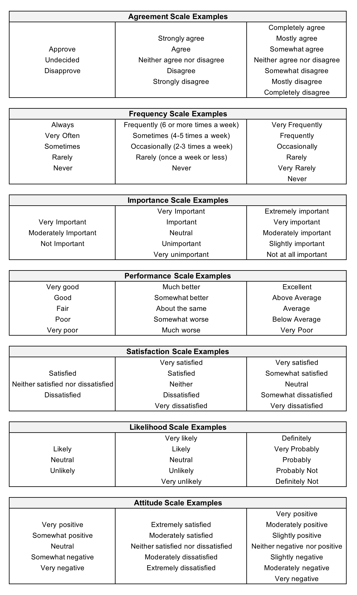

Back to Blog Home
Back to Blog Home
Upgrade Your Surveys with These Effective Likert Scale Examples
Likert scales are commonly used in surveys to measure attitudes, opinions, and perceptions of individuals towards a particular topic. A Likert scale is a type of rating scale that is used to measure the degree of agreement or disagreement of a respondent with a statement. It is named after its creator, Rensis Likert, who developed it in the 1930s. In this article, we will discuss some examples of Likert scales that can be used in surveys.
Various Types of Likert Scales
1. Agreement Scale
The agreement scale is the most commonly used Likert scale. It is used to measure the degree of agreement or disagreement of a respondent with a statement. The scale usually ranges from 1 to 5, where 1 represents "strongly disagree" and 5 represents "strongly agree." An example of an agreement scale statement is "I believe that climate change is a serious problem that needs to be addressed immediately."
2. Frequency Scale
The frequency scale is used to measure how often a respondent performs a particular behavior or activity. The scale usually ranges from 1 to 5, where 1 represents "never" and 5 represents "always." An example of a frequency scale statement is "How often do you exercise in a week?"
3. Importance Scale
The importance scale is used to measure the degree of importance a respondent places on a particular issue or topic. The scale usually ranges from 1 to 5, where 1 represents "not important at all" and 5 represents "extremely important." An example of an importance scale statement is "How important is it for you to have access to high-speed internet?"
4. Performance Scale
The performance scale is used to measure the performance of a product or service in meeting that need. The scale usually ranges from 1 to 5, where 1 represents "very poor" and 5 represents "very good." An example of a performance scale statement is "How well does your current provider meet that need?"
5. Satisfaction Scale
The satisfaction scale is used to measure the degree of satisfaction a respondent has with a particular product or service. The scale usually ranges from 1 to 5, where 1 represents "very dissatisfied" and 5 represents "very satisfied." An example of a satisfaction scale statement is "How satisfied are you with the customer service you received?"
6. Likelihood Scale
The likelihood scale is used to measure the probability of a respondent engaging in a particular behavior or activity. The scale usually ranges from 1 to 5, where 1 represents "very unlikely" and 5 represents "very likely." An example of a likelihood scale statement is "How likely are you to recommend our product to a friend?"
7. Attitude Scale
The attitude scale is used to measure the overall attitude of a respondent towards a particular issue or topic. The scale usually ranges from 1 to 5, where 1 represents "very negative" and 5 represents "very positive." An example of an attitude scale statement is "How do you feel about the current state of the economy?"
Example Options for Likert Scale

Wrapping Up
In conclusion, Likert scales are a valuable tool for measuring attitudes, opinions, and perceptions of individuals towards a particular topic. The examples discussed in this article can be used as a starting point for creating Likert scales for surveys. It is important to note that the wording of the statements and the number of response options can have an impact on the results, so careful consideration should be given to their design.